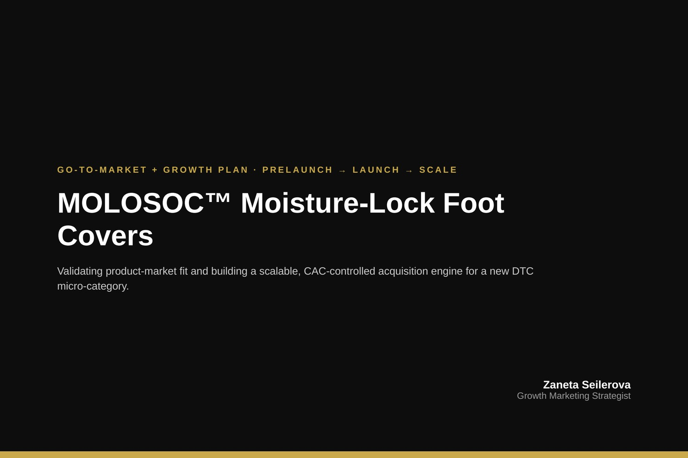
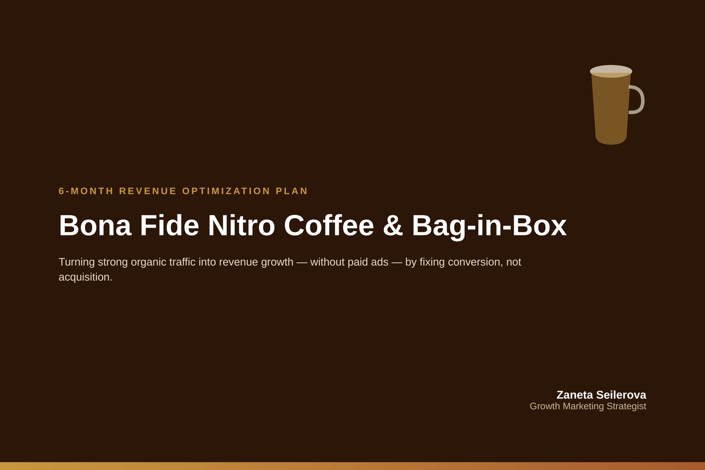

Growth Strategy
Connecting acquisition, conversion, and retention into a single, coherent growth plan.
Digital Marketing Director
Growth, SEO/GEO, E-commerce & AI Strategy
I help founders, companies, and agencies build and improve complete digital ecosystems — from brand positioning and website strategy to paid media, e-commerce operations, and AI-assisted marketing workflows. I work equally comfortably at the strategy table and inside the platforms themselves.
About
I am a multidisciplinary digital marketing leader with experience creating, managing, and improving complete digital ecosystems — from the first product concept through brand, website, advertising, fulfillment, and customer communication. I move fluidly between long-term strategy and day-to-day, hands-on execution across the tools and platforms that make modern marketing work.
Core Expertise
Connecting acquisition, conversion, and retention into a single, coherent growth plan.
Search engine optimization alongside emerging generative-engine optimization for AI-driven discovery.
Meta Ads and Google Ads campaign strategy, structure, and ongoing optimization.
End-to-end store strategy across Shopify and WooCommerce — from setup to ongoing optimization.
Improving the journey from first visit to purchase through testing and structured iteration.
Lifecycle and campaign email built primarily in Klaviyo, tied to broader retention strategy.
Tracking setup and reporting that connects marketing activity to business outcomes.
Building AI-assisted processes into content, research, and campaign workflows for speed and quality.
Selected Work
A selection of projects reflecting the range of my work — from building a product brand from scratch to specialized e-commerce and wellness marketing. Click any project to see the details.


This category represents strategic work completed through Toptal and direct client engagements. Specific client names, data, and materials are kept confidential in line with client agreements. Details below are described in general terms.
How I Work
I combine strategic thinking with hands-on execution. I can step back and understand the complete customer journey — from first touch to retention — and I can also work directly inside advertising platforms, websites, analytics tools, email systems, and content workflows. That combination means strategy stays grounded in what is actually achievable, and execution stays aligned with the bigger picture.
Tools & Platforms
Toptal
I am a member of the Toptal talent network, a platform that connects companies with freelance and consulting talent across technology, design, and business functions. Toptal talent goes through a screening process before joining the network.
View My Toptal Profile (placeholder link — update with your profile URL)
Testimonials
Client testimonials will be added here as they become available.
[Client testimonial placeholder — add once available]
[Client testimonial placeholder — add once available]
[Client testimonial placeholder — add once available]
Contact
The best way to reach me is by email, or through LinkedIn or Toptal. I'm happy to discuss growth strategy, e-commerce, or AI-assisted marketing projects at any stage.